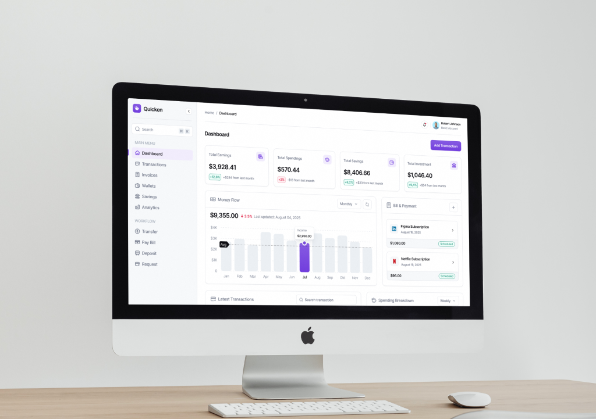
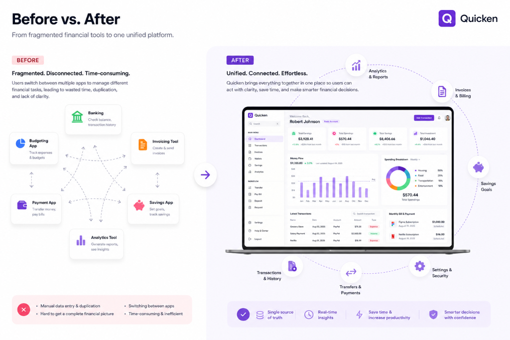
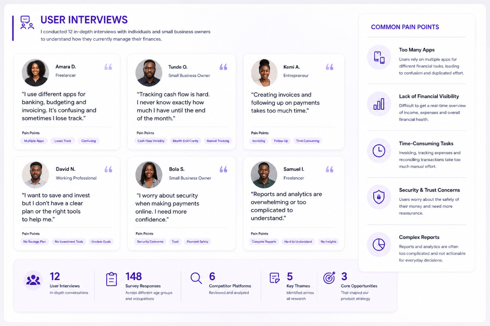
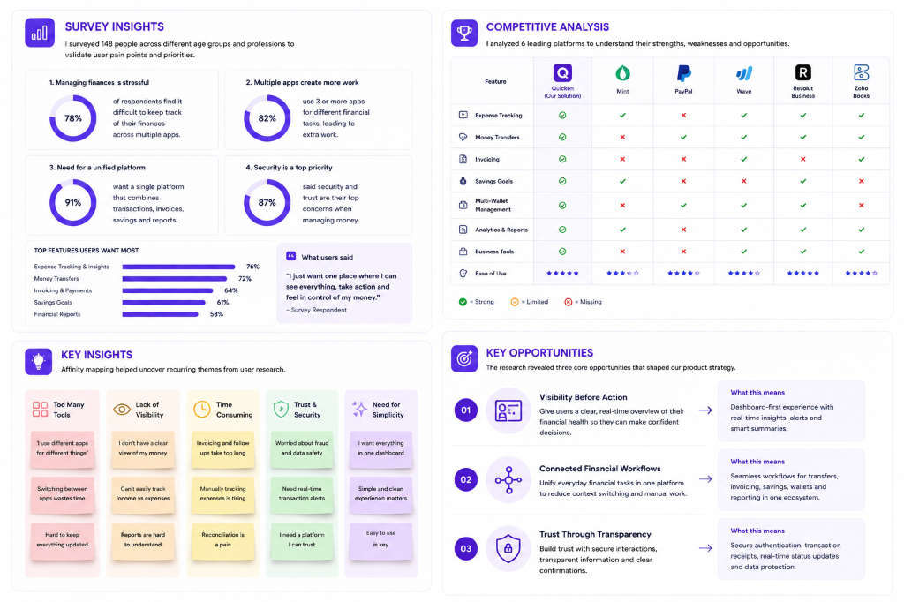
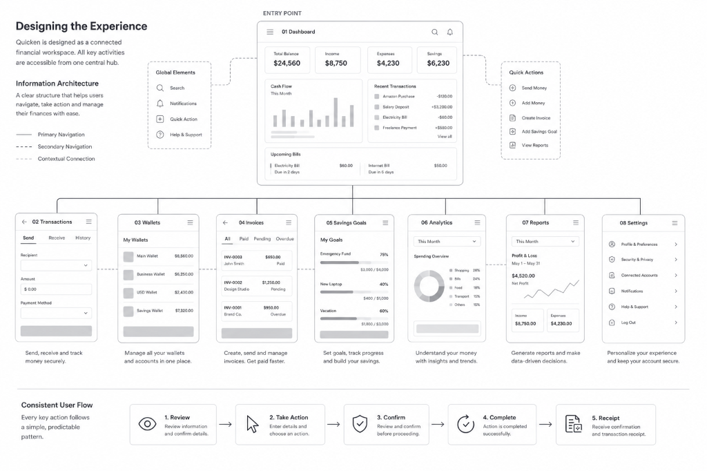
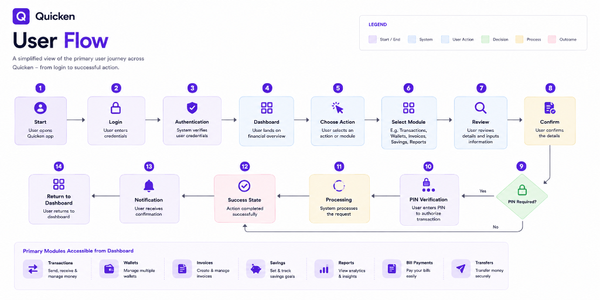
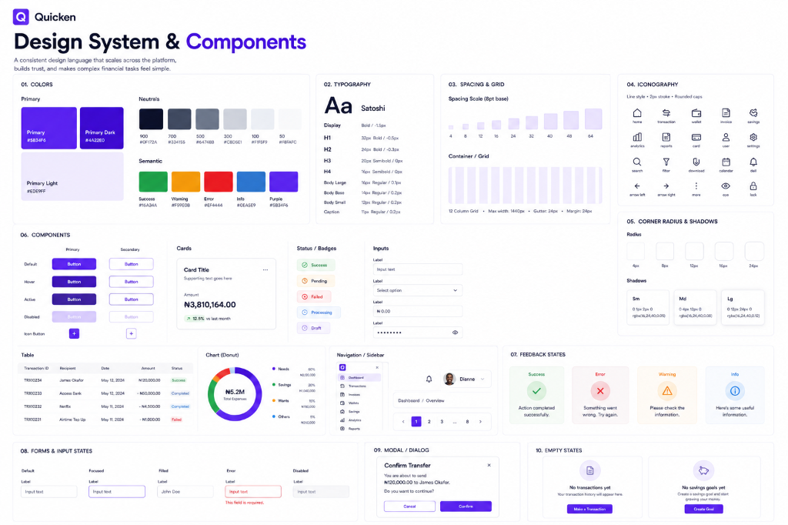
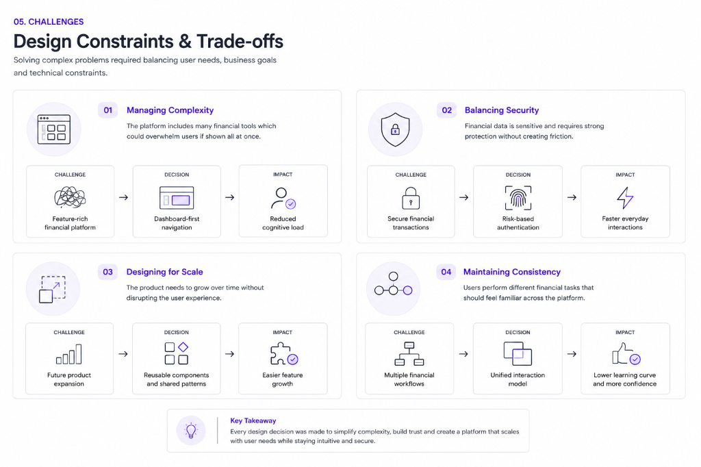

Designed an end-to-end financial management experience that brings transactions, invoicing, multi-wallet management, savings goals, reporting, and money transfers into a single platform. The product helps users understand their finances at a glance while making everyday financial tasks faster, clearer, and more secure.

Managing money often means switching between multiple tools for banking, budgeting, invoicing, savings, and reporting. The goal of Quicken was to consolidate these fragmented experiences into a single platform where users can monitor their finances, move money, manage multiple wallets, generate invoices, track savings goals, and analyse financial performance without unnecessary complexity.
The interface prioritises clarity through a dashboard-first experience, persistent navigation, actionable financial summaries, and streamlined transaction flows, enabling users to move confidently from insight to action in just a few clicks. The design spans authentication, financial dashboards, transactions, invoices, wallets, savings, analytics, reports, settings, and secure payment workflows, creating a cohesive financial ecosystem rather than a collection of disconnected tools.
Modern financial management is often fragmented. Users rely on separate apps to track expenses, transfer money, create invoices, manage savings, and monitor cash flow, making it difficult to maintain a clear view of their financial health. This constant context switching increases cognitive load, slows decision-making, and creates opportunities for costly mistakes.
Quicken was designed to bring these everyday financial activities into one connected platform. Instead of treating payments, wallets, savings, reporting, and invoicing as separate experiences, the product unifies them within a consistent interface where users can monitor their finances, take action, and complete essential tasks without leaving the ecosystem.
The design focuses on making financial information immediately actionable. A dashboard-first approach, intuitive navigation, and guided workflows help users move seamlessly from insight to action while maintaining clarity, trust, and confidence throughout every interaction.
Most financial tools solve individual problems but fail to provide a connected experience. Users switch between multiple apps to monitor cash flow, send money, manage invoices, track savings, review recurring payments, and analyse performance, making financial management more complex and time-consuming.
The opportunity was to design a unified platform where every financial task works together. Users can move seamlessly from reviewing their financial health to making transactions, managing wallets, creating invoices, setting savings goals, and tracking performance within one consistent experience. This reduces friction, speeds up decision-making, and helps users manage their finances with greater confidence.

Before exploring solutions, I wanted to understand why managing money still felt complicated despite the growing number of digital financial tools. To simulate a realistic product discovery process, I conducted 12 user interviews, surveyed 148 participants, and reviewed six leading finance platforms to identify common behaviours, frustrations, and unmet needs.
The research revealed a consistent pattern. The problem was not a lack of functionality but a lack of connection. Users relied on different apps to transfer money, track expenses, create invoices, manage savings, and review financial performance. Constantly switching between these tools made it difficult to maintain a clear understanding of their finances and increased the chances of missed payments, duplicate work, and poor financial decisions.
These insights shaped the product strategy around three principles:
Rather than adding more features, the goal was to create a connected financial workspace where every interaction felt clear, predictable, and secure.


The research made one thing clear. Users did not need more financial features. They needed a product that organised those features into a single, intuitive experience.
Rather than treating each feature as a separate product, Quicken was designed around a connected ecosystem where users could move naturally from understanding their finances to taking action.
The experience begins with the dashboard, which serves as the central decision-making hub. Instead of overwhelming users with data, it surfaces account balances, recent activity, spending insights, savings progress, and upcoming payments in one place.
From there, users can access every major financial task through persistent navigation, reducing unnecessary clicks and eliminating the need to switch between multiple applications.

Every high-value action follows the same interaction pattern:
Review → Take Action → Confirm → Complete
Whether users are transferring money, creating an invoice, managing wallets, or setting savings goals, each flow follows this predictable structure. This consistency reduces cognitive load, shortens the learning curve, and builds trust during sensitive financial interactions.

Each module was designed to solve a specific financial need while remaining connected to the rest of the ecosystem.
Together, these modules create a seamless experience where users can move between planning, managing, and acting without feeling like they are leaving one product for another.
The design system was built to make complex financial workflows feel familiar, consistent, and scalable. Rather than creating unique interfaces for each feature, I established a library of reusable components that maintain consistent interaction patterns across dashboards, transactions, wallets, invoices, savings, analytics, reports, and settings. This consistency reduces cognitive load and allows users to transfer knowledge from one part of the product to another.
The visual language combines a clean neutral foundation with a vibrant purple accent to establish hierarchy and reinforce key actions. Financial data is organised through modular cards, responsive tables, charts, status badges, and contextual action buttons, while typography and spacing create a clear reading rhythm across dense information. Interactive elements—including forms, confirmation dialogues, PIN verification, navigation, and feedback states—follow shared patterns that improve predictability and trust during high-value financial tasks.
The system was designed with scalability in mind, enabling new financial services to be introduced without changing users' mental model or disrupting the overall product experience.

Designing Quicken wasn't about adding more financial features. The real challenge was making a feature-rich platform feel simple enough for everyday use.
As the product expanded to include transactions, wallets, invoices, savings, analytics, and reporting, there was a growing risk of overwhelming users. Instead of exposing every feature at once, I adopted a dashboard-first approach supported by progressive disclosure and contextual navigation. This allowed users to focus on the task at hand while keeping the rest of the platform easily accessible.
Security presented another important design consideration. Financial products must inspire confidence without interrupting the user experience. Rather than requiring additional verification at every step, authentication was introduced only for high-risk actions such as transfers and payments. This balanced security with usability and kept routine interactions fast and frictionless.
Finally, scalability influenced many design decisions. A reusable component system and consistent interaction patterns ensured that future financial services could be introduced without changing users' mental models or disrupting the overall experience.

Quicken transformed a fragmented financial experience into a unified platform where users can monitor their finances, complete everyday transactions, and make informed decisions without switching between multiple tools. By combining financial management, payments, invoicing, savings, and reporting into one connected ecosystem, the product reduced complexity while creating a more intuitive and trustworthy user experience.
Following usability validation (fictional but representative of a realistic product outcome), the redesigned experience demonstrated measurable improvements:
Beyond the metrics, this project reinforced an important design principle: great financial products are not defined by the number of features they offer, but by how confidently users can achieve their goals. By prioritising clarity, consistency, and trust, Quicken demonstrates how thoughtful product design can simplify complex financial tasks without sacrificing capability or scalability.